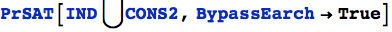

A Decision Procedure for the Probability Calculus
Branden Fitelson (Rutgers)
…with invaluable assistance from Jason Alexander (London School of Economics) and Ben Blum
PrSAT 2.4 should be compatible with Mathematica version 10. Please send any bugs, comments, etc. to branden@fitelson.org. [Package last updated 04/23/15.]
A paper about PrSAT and some of its applications (which has appeared in RSL) is available at http://fitelson.org/pm.pdf.
What is PrSAT?
PrSAT is a user-friendly, Mathematica function for testing the satisfiability of (arbitrary) sets of statements in the probability calculus. Version 2.4 of PrSAT should be compatible with Mathematica 10 (as well as versions 6-9). This Mathematica 10 notebook, which briefly explains the functions in the PrSAT 2.4 package, is included in the archive mentioned in the installation instructions.
Installation instructions
1. Download the PrSAT zip archive from the following location, and unzip it somewhere on your local machine:
http://fitelson.org/PrSAT/PrSAT.zip
2. Copy PrSAT.m to the directory returned when you evaluate the following cell (output format shown below is on Mac OS X).
3. Open PrSAT.nb in Mathematica (version 6 or later – now including version 10).
Initialization cell
If the above installation was successful, evaluating the cell (in PrSAT.nb) initialization cell should eveluate without any errors. And, none of the cells below should generate errors, etc. [If you obtain errors here, then try to re-run the notebook on a fresk Mathematica kernel session.]
Using PrSAT
The PrSAT function itself takes as its main argument a set of statements (equations, inequations, and/or inequalities) in the probability calculus. If that set is satisfiable, then (in principle) PrSAT will return a probability model which makes all the statements in the set true. If the set is not satisfiable, then (in principle) PrSAT will reutrn the empty set {}. PrSAT accepts upper or lower case letters (subscripts are also allowed) as propositional variables. PrSAT recognizes "∧, ∨, and ¬" for the logical connectives "and", "or", and "not", respectively, And, PrSAT uses "Pr[X]" for "the unconditional probability of X, and Pr[X | Y]" for "the conditional probability of X, given Y." Here is a simple PrSAT example, involving two jointly satisfiable probabilistic equations:
When it finds a model (as in this first example), PrSAT's default output is not a terribly readble representation of a probability model. A “stochastic truth-table” (to use the language of the RSL paper mentioned above) formatting function is included. Here's an example of its output on the above PrSAT data structure:
| X | Y | var | Pr |
| T | T | ||
| T | F | 0 | |
| F | T | ||
| F | F |
The are the probabilities assigned by the discovered model to the state descriptions of the language (i.e., the minimal language needed to express the given set of input constraints).
Suppose you wanted to find a positive (or regular) probability distribution satisfying the above constraints. The optional argument Probabilities makes this possible. The default value of Probabilities is "NotRegular", which means that zeros are allowed in the probability functions PrSAT reports in its model output. But, by adding "Probabilities → Regular" as an optional argument to PrSAT, only strictly positive probability models are returned. Applied to the last example, this yields:
| X | Y | var | Pr |
| T | T | ||
| T | F | ||
| F | T | ||
| F | F |
One can easily verify properties of a PrSAT generated model, using the function EvaluateProbability:
Indeed, one can use EvaluateProbability to compute the value of any probability expression (or list thereof) on a PrSAT generated model:
The complexity of the decision procedure used by PrSAT grows (doubly) exponentially in the number of propositions involved in the set of statements. For sets involving three or more events, the decision procedure in PrSAT can consume significant computational resources. For this reason, a random search feature has been included in PrSAT. Note that the random search feature may not find a model even if one exists, and it can return different probability models for the same input. By default, PrSAT first tries several random searches. If these random searches fail, then the problem is fed to the decision procedure (exhasutive search) underlying PrSAT. Here's an example of an unsatisfiable set of formulas, in which the random search phase fails (as does the exhaustive search!):

We can turn off the random search functionality, using the BypassSearch option (which, by default, is turned off).

Here's a non-trivial example of PrSAT at work. Every introductory probability text explains that it is possible for a set of three propositions to be pairwise independent, but not independent simpliciter. That is, the following set of four statements is jointly satisfiable:
Using PrSAT, we can find a model that proves this. The naive way to do this is to simply run PrSAT on the set IND with no equational side-constraints. The random search algorthm will find a model pretty quickly (given a sufficient number of SearchAttempts—the default number of SearchAttempts is 3, which may not be sufficient for this example).
| X | Y | Z | var | Pr |
| T | T | T | ||
| T | T | F | ||
| T | F | T | ||
| T | F | F | ||
| F | T | T | ||
| F | T | F | ||
| F | F | T | ||
| F | F | F |
This problem takes much longer for PrSAT to solve if it does not use random search. However, if we add just a single additional equational constraint to the problem, then even the decision procedure can solve this one in reasonable time (and it finds a much more pleasant looking model — which is typically the case for the decision procedure as opposed to the random search algorithm):
| X | Y | Z | var | Pr |
| T | T | T | ||
| T | T | F | ||
| T | F | T | ||
| T | F | F | ||
| F | T | T | ||
| F | T | F | ||
| F | F | T | ||
| F | F | F |
Of course, if IND ∪ { } is satisfiable, then so is IND alone. It's just much easier to find models when you know you only have to look at ones in which (since there are a lot fewer of these!). However, one must be careful not to infer that a set S is unsatisfiable on the grounds that S ∪ C is unsatisfiable, for some set of equational side-constraints C. That would be a fallacy. For instance, we could easily add side constraints to the problem above that would render the problem unsatisfiable (even though the original set of constraints is satisfiable). For instance,
} is satisfiable, then so is IND alone. It's just much easier to find models when you know you only have to look at ones in which (since there are a lot fewer of these!). However, one must be careful not to infer that a set S is unsatisfiable on the grounds that S ∪ C is unsatisfiable, for some set of equational side-constraints C. That would be a fallacy. For instance, we could easily add side constraints to the problem above that would render the problem unsatisfiable (even though the original set of constraints is satisfiable). For instance,

PrSAT also contains some "scratchpad" functionality, which allows the user to work directly with PrSAT's underlying algebraic representations of probabilistic statements. The main sratchpad function is AlgebraicForm. Let's examine the previous example using AlgebraicForm.

This is PrSAT's underlying algebraic representation of the system IND. We can now work directly with the algebraic representation. For instance, we can solve the equational part of INDa, as follows: